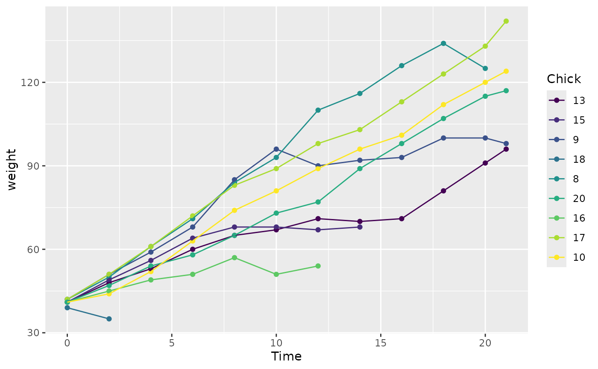
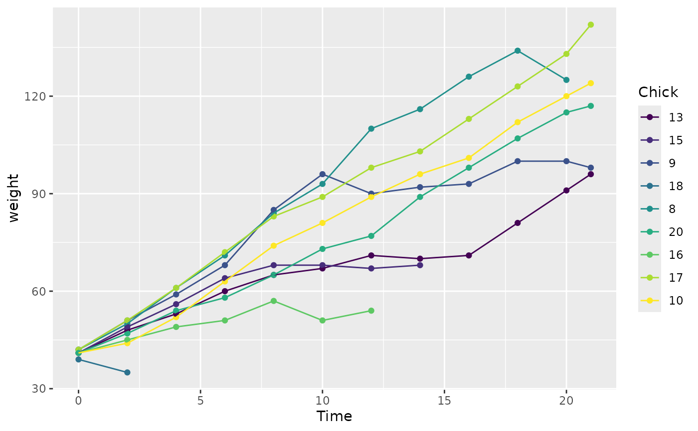

fct_reorder() is useful for 1d displays where the factor is mapped to
position; fct_reorder2() for 2d displays where the factor is mapped to
a non-position aesthetic. last2() and first2() are helpers for fct_reorder2();
last2() finds the last value of y when sorted by x; first2() finds the first value.
Usage
fct_reorder(
.f,
.x,
.fun = median,
...,
.na_rm = NULL,
.default = Inf,
.desc = FALSE
)
fct_reorder2(
.f,
.x,
.y,
.fun = last2,
...,
.na_rm = NULL,
.default = -Inf,
.desc = TRUE
)
last2(.x, .y)
first2(.x, .y)Arguments
- .f
A factor (or character vector).
- .x, .y
The levels of
fare reordered so that the values of.fun(.x)(forfct_reorder()) andfun(.x, .y)(forfct_reorder2()) are in ascending order.- .fun
n summary function. It should take one vector for
fct_reorder, and two vectors forfct_reorder2, and return a single value.- ...
Other arguments passed on to
.fun.- .na_rm
Should
fct_reorder()remove missing values? IfNULL, the default, will remove missing values with a warning. Set toFALSEto preserveNAs (if your.funalready handles them) andTRUEto remove silently.- .default
What default value should we use for
.funfor empty levels? Use this to control where empty levels appear in the output.- .desc
Order in descending order? Note the default is different between
fct_reorderandfct_reorder2, in order to match the default ordering of factors in the legend.
Examples
# fct_reorder() -------------------------------------------------------------
# Useful when a categorical variable is mapped to position
boxplot(Sepal.Width ~ Species, data = iris)
 boxplot(Sepal.Width ~ fct_reorder(Species, Sepal.Width), data = iris)
boxplot(Sepal.Width ~ fct_reorder(Species, Sepal.Width), data = iris)
 # or with
library(ggplot2)
ggplot(iris, aes(fct_reorder(Species, Sepal.Width), Sepal.Width)) +
geom_boxplot()
# or with
library(ggplot2)
ggplot(iris, aes(fct_reorder(Species, Sepal.Width), Sepal.Width)) +
geom_boxplot()
 # fct_reorder2() -------------------------------------------------------------
# Useful when a categorical variable is mapped to color, size, shape etc
chks <- subset(ChickWeight, as.integer(Chick) < 10)
chks <- transform(chks, Chick = fct_shuffle(Chick))
# Without reordering it's hard to match line to legend
ggplot(chks, aes(Time, weight, colour = Chick)) +
geom_point() +
geom_line()

# With reordering it's much easier
ggplot(chks, aes(Time, weight, colour = fct_reorder2(Chick, Time, weight))) +
geom_point() +
geom_line() +
labs(colour = "Chick")
# fct_reorder2() -------------------------------------------------------------
# Useful when a categorical variable is mapped to color, size, shape etc
chks <- subset(ChickWeight, as.integer(Chick) < 10)
chks <- transform(chks, Chick = fct_shuffle(Chick))
# Without reordering it's hard to match line to legend
ggplot(chks, aes(Time, weight, colour = Chick)) +
geom_point() +
geom_line()

# With reordering it's much easier
ggplot(chks, aes(Time, weight, colour = fct_reorder2(Chick, Time, weight))) +
geom_point() +
geom_line() +
labs(colour = "Chick")